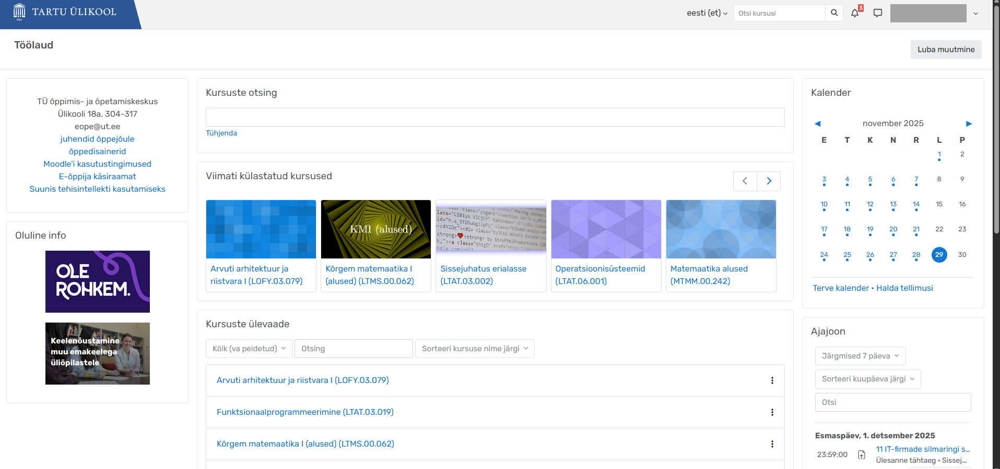

Avaleht
Pealehelt leiad kalendri ja kursuste lehed, kus toimub enamus õppetööd.
Kalender
Kalendrist näed oma tööde tähtaegu. Hoides kursorit kuupäeva peal, näitab see vastavate tööde pealkirju.
Samuti saab kuupäevale peale vajutada, et näha detailsemat vaadet ülesandepüstituse kohta ning ka linki töö esitamiseks ning ka vastava aine kodulehele navigeerimiseks.
Kalendri all on ka ajajoon, mis on analoogne kalendriga, kuid on antud ka lingid vastavate tööde originaalsete kirjeldusteni.
Kursuse lehed
Pealehelt leiad ka lingid iga kursuse lehele, mis ilmuvad sinna südaööl pärast ainesse registreerimist.
Kursuse lehe vasakul küljel on menüü sellel lehel navigeerimiseks. Sealt leiad oma hinnetelehe ning tavaliselt ka aine raames tehtud otseülekannete salvestused.
Paremal küljel on kalender, mis näitab ainult selle aine tähtaegu.
Ülejäänud kursuse leht on koostatud aine õppejõu poolt ning võib kursuste raames erineda.
Tavaliselt on see korraldatud nii, et üleval on mingisugune sissejuhatav osa koos tähtsate linkidega, allosast leiad aga kuupäevade kaupa tundides käsitletud materjale.
Näide kursuse lehest: